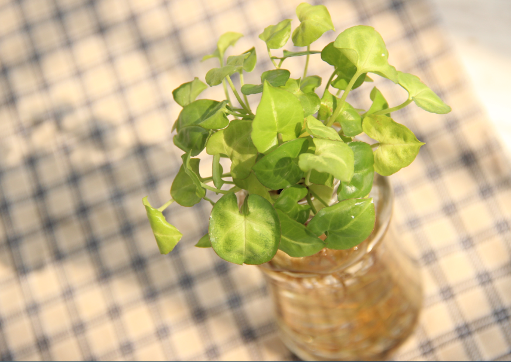
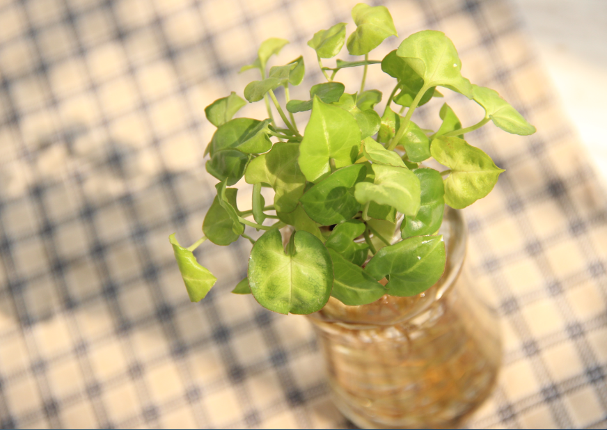

合 果 芋
合果芋为天南星科多年生常绿草本植物，原产于热带美洲地区，现作为一种观叶植物在世界各地广泛栽培。合果芋为多年生蔓性常绿草本植物，是一种观叶植物在世界各地广泛栽培。合果芋的茎节具气生根，攀附他物生长。
合果芋为天南星科多年生常绿草本植物，原产于热带美洲地区，现作为一种观叶植物在世界各地广泛栽培。合果芋为多年生蔓性常绿草本植物，是一种观叶植物在世界各地广泛栽培。合果芋的茎节具气生根，攀附他物生长。
可作篱架及边角、背景、攀墙和铺地材料；可以吸收甲醛、苯。
喜高温多湿。适应性强，生长健状， 能适应不同光照环境。 喜高温多湿和半阴环境。不耐寒，怕干旱和强光暴晒。
很便宜！